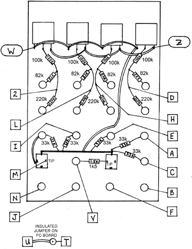

QUAD VCA 101 ('78-'79) The QUAD VCA uses PC board VCA 101. The dotted lines on the drawing represent strips of masking tape on the rear of the panel. These should be applied before wiring is begun since their purpose is to guard against possible contact between the resistor leads and the panel. The resistors are color-coded with the following codes:
100k: Brown-Black-Yellow-Gold
Install the Jumper between pads U and T as shown.
Preliminary Tests and user's instructions:Turn all knobs all the way up and check for a signal output at each of the VCAs when a signal is applied to the corresponding input jack. Turn the knobs down about halfway and apply a control voltage to the VC input then the AM input. A signal applied to the input should be strongly enveloped by the VC applied input, and modulated to a lesser extent by the AM applied signal or control voltage. Check the MIX output, and the External Input. If the pots are turned all the way down, no signal should pass even when a control voltage is applied, except through the EXT input and the X1 input. Inputs applied to these inputs will appear at the Mix outputs and are not affected by control voltages applied to the other VCAs.
|